漁船
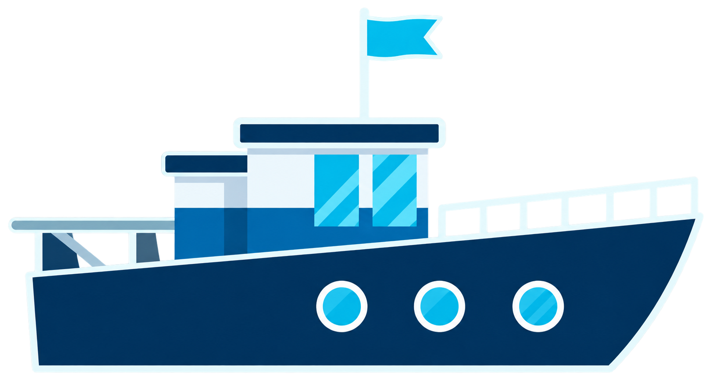

底拖網拖行時，會刮動埋在海床裡的海纜
26 條通訊海纜，是臺灣對內、對外的重要通訊管道，承載了 99% 的網路流量。當海纜從看不見的網路基礎設施，變成國防安全與社會焦慮的一部分。
我們從馬祖斷纜與臺灣面臨的灰色地帶風險出發，拆解手機服務可能出現的斷點，也走進五個人的離線準備：當熟悉的連線不再可靠，我們能否繼續取得資訊、維持生活，並找到彼此？
開放文化基金會透過五篇報導、一篇報告及五大工具，備妥你的防災工具箱，面對斷訊風險，讓日常依然穩定前行。

底拖網拖行時，會刮動埋在海床裡的海纜


船錨下沉後，可能勾住海纜並向上拉扯

海床被挖出缺口，讓原本埋好的海纜裸露、下陷
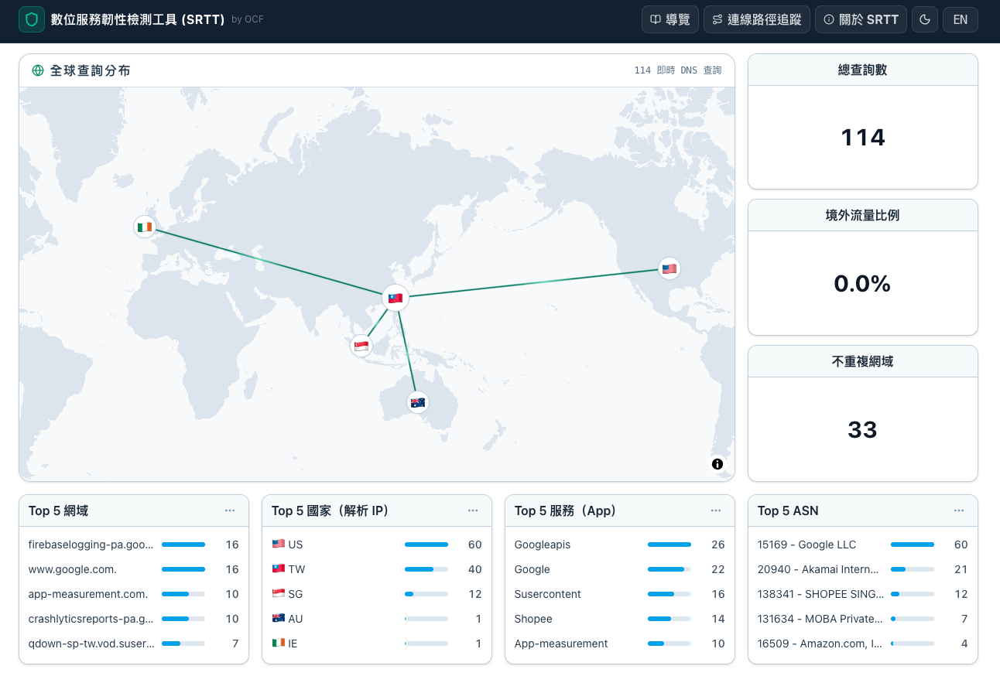
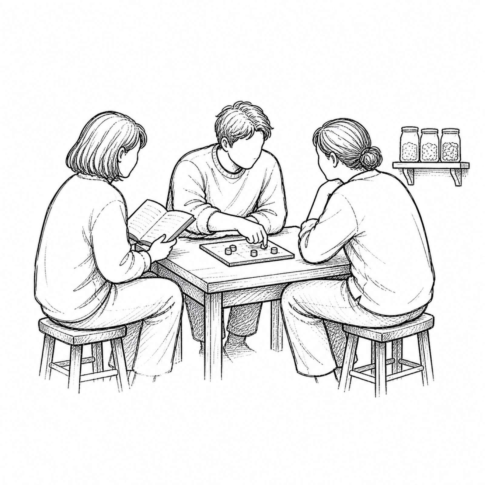
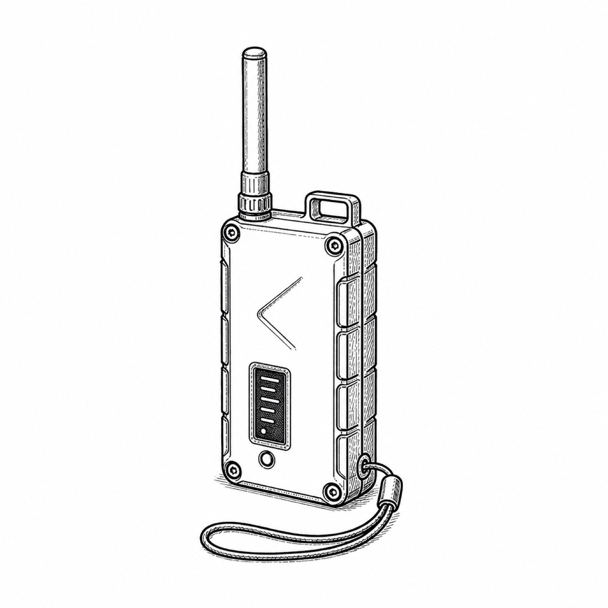
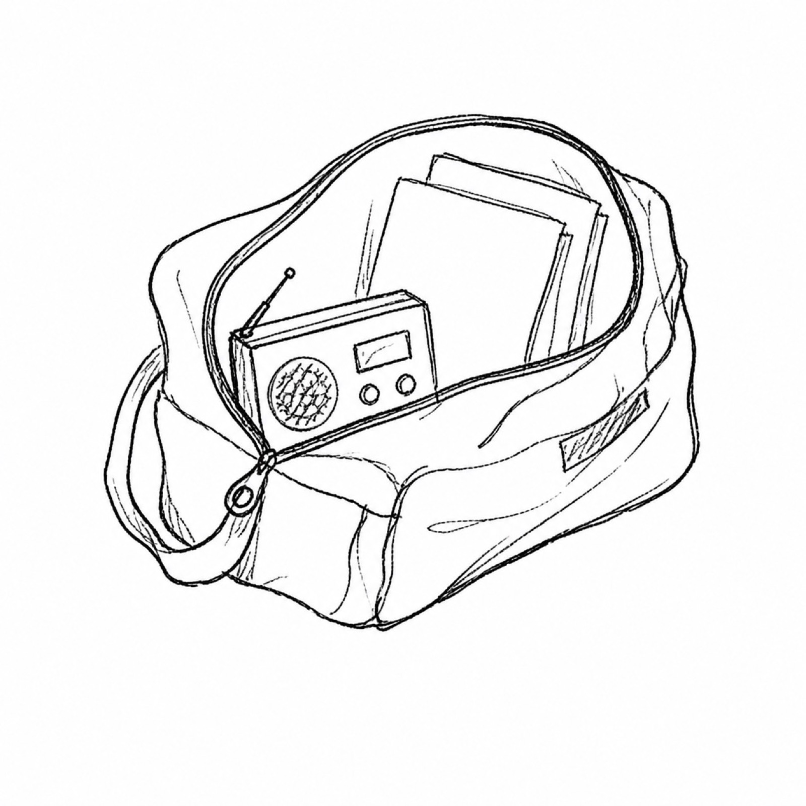
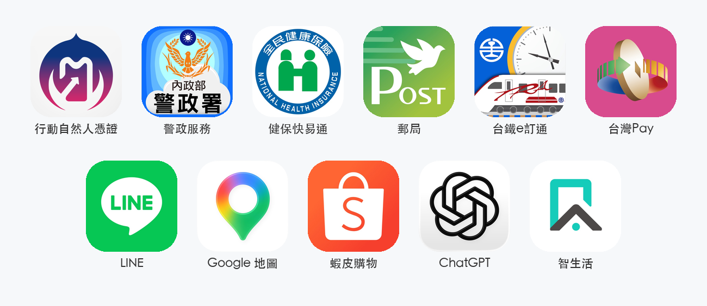
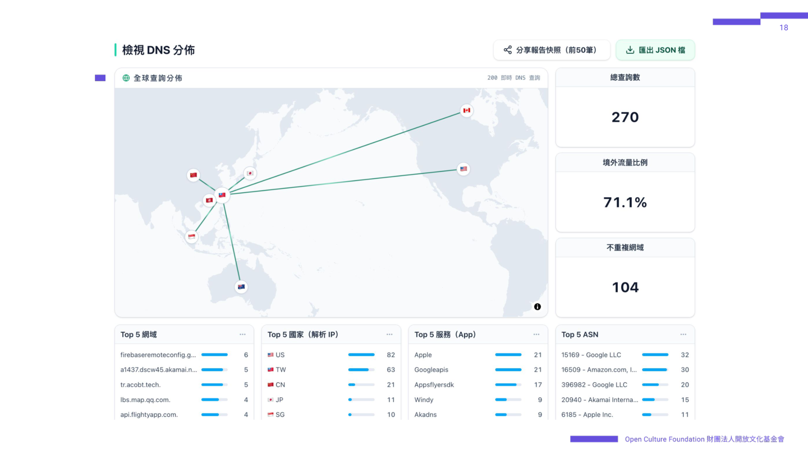
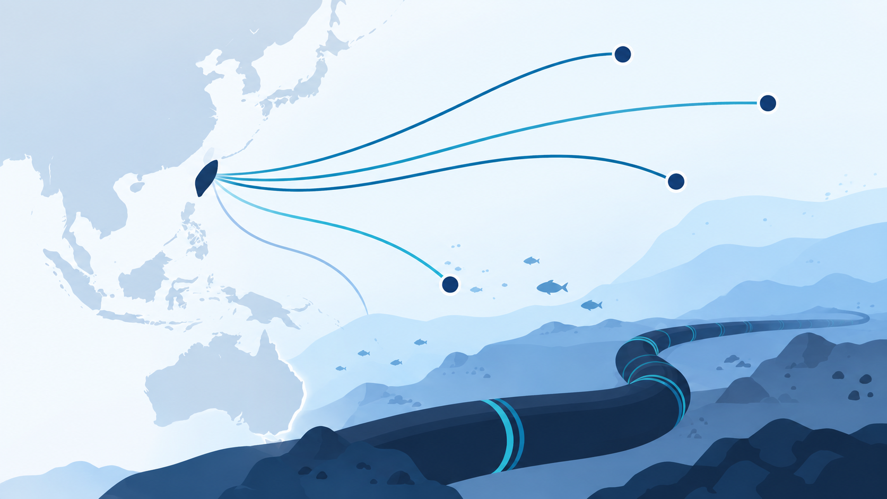
2023 年冬天馬祖兩條對外海纜同時中斷；三年後，臺灣政府把類似情境搬進防空演習。當頻寬不足、行動網路可能被分級限流，臺灣準備好了嗎？
文／李又如
2023 年的冬天，馬祖居民到中華電信門口排排坐下，那裡是島上少數收得到較穩定網路訊號的地方，有人滑手機到深夜才離開。兩條對外海纜同時中斷後，平常幾秒鐘完成的通訊，變成了一場漫長等待。3 年後，臺灣政府首度把類似情境搬進防空演習：當海纜或通訊設施受損、頻寬不足，行動網路可能被分級限流，只留下語音和簡訊。到時候，臺灣準備好了嗎？
在 8 月 10 日、13 日分別在臺灣中部和北部實行的防空演習，除了演練民眾已經習慣的流程：當防空警報響起，人們應該立即進入建築物或避難設施避難，在指定的 30 分鐘演習時間，街上往往空無一人；此次就連待在家裡的人也「很有感」，因為手機行動網路也被模擬降速。
首次的演習，有人測試傳簡訊給朋友會不會通、有人改連 Wi-Fi 之後暢通無阻、有人實測手機網路斷斷續續。總統府發言人郭雅慧提到，「這個做法並非臺灣首創，民主國家都有針對斷電、網路攻擊、通訊受阻等情況演練模擬，是民主國家提升韌性的普遍做法。」
將網路降速納入軍事演習，代表它是可能會發生的風險——去年，國安局首次定調，海底電纜遭疑似中國背景的船隻破壞，已經成為境外勢力對臺灣的灰色地帶威脅樣態。
臺灣有 16 條國際海纜，承載臺灣絕大多數對外網路流量。去年底政府發放給全國人民的、被稱作「小橘書」的《臺灣全民安全指引》，就將「多數海纜遭破壞、大規模網路癱瘓」列為軍事侵略的可能情境，顯示海底電纜若大規模斷裂，恐讓臺灣成為孤島。
若把網路傳輸想像成水流，斷了一條，並不會讓網路消失。但相同的流量、管道卻減少，就會塞車受阻。全斷不容易，但過去有三次接近的經驗，一次發生在 2006 年、兩次發生在近五年間，而馬祖也真的成為斷訊的孤島長達兩個月。
首次海纜大規模斷裂發生在 2006 年的恆春大地震。當年 12 月 26 日在巴士海峽發生芮氏規模 7 的強震，雖然對臺灣造成的傷亡不大，卻讓多條海底電纜斷裂，影響到臺灣、日本、中國、韓國之間的網路服務，對外連到美國、英國也受阻。
不過，2006 年臺灣的個人上網率只有 64.4%，大多數人使用頻率每日僅有 1-3 小時，使得災難性的影響主要集中在特定行業：如金融業、航空業、旅遊業，一名資深記者就提到，當時臺灣人很習慣在天災後停水、停電、電話不通，不太會意識到網路斷線的影響。但到了 2023 年，就不是這麼回事了。
2023 年臺灣個人上網率逼近九成，大多數人的使用習慣是「幾乎天天且時間長或頻率高」，這讓 2023 年 2 月馬祖對外的 2 號、3 號海纜全斷時，近兩個月的時間幾乎成為孤島。
「一開始收到訊息時，我想說怎麼可能？斷網？應該兩小時後就會好了吧。」馬祖西尾半島物產店創辦人施佩吟當時人在臺灣，收到店裡夥伴的訊息說，現在馬祖網路不穩，可能會斷網好幾天。而她收到訊息時，已經離訊息傳送的時間相隔了半天，「感覺是夜間有一點點流量剩餘時，訊息才傳到我這。」
因為西尾半島物產店的餐點屬於預約制，但當時客人電話打不進來、社群網站訊息也都收不到，「也有客人很不開心，覺得我們不回訊息。」施佩吟提到，無法掌握預約數量就無法事先做準備，加上馬祖的食材也不是去商店買就有，很多都是要靠船班運來，「那段時間，生意也不好，加上我們請了三個員工，影響就是大家都沒什麼事情可做。」
工作與海纜相關的宏明（化名）一直記得那個很奇特的景象，馬祖居民下班後，會到中華電信外面收 Wi-Fi，中華電信還提供椅子給居民坐，「天氣很冷，大家就端著熱茶、坐在那裡滑手機，直至深夜都還有人。」
北竿鄉鄉民代表詹庭語也回憶道，「其實大家有點後知後覺，就覺得可能是中華電信的機房有問題，以為一下子就會恢復了。大概過了一個星期，都沒有恢復，才覺得好像不太對勁。」後來透過議員瞭解，才知道斷纜事件跟中國船隻有關，不只是一般的「網路壞掉」。
「大家好像都『回歸自然』」，詹庭語說，「連找一個小朋友、或跟一個鄉親聯絡，手機連電話都打不通，更不用說是 LINE，得直接去現場找。會問鄰居有沒有看到啊、或是直接去學校找人這樣。這都是現代很難想像的。」
他舉例，超商沒有網路可以運作收銀機，顧客也沒辦法用數位支付。沒有現金的，就用手寫的方式記帳，等到有網路（或有帶現金）的時候再一次結帳。
施佩吟也提到，一開始覺得網路幾天就會好，沒想到後來持續了幾個禮拜，他們開始在店裡舉辦一些讀書會、放映會，「因為真的太無聊了，整個馬祖幾乎都是服務業，除了公務機關，觀光是全島唯一的經濟來源，沒有客人，就代表我們沒事可做。」
讓她印象深刻的是，有一位漁民，平常都以勞力工作為主，幾乎沒有什麼休閒時間。但因為那陣子接不到訂單，「連漁民大哥都跑到我們店裡看書！」
歷經這一切的詹庭語說，「想像如果發生在臺灣本島，其實是很大的一個災難。交通、金融、光是買東西都會受影響。不用講馬祖經歷的兩個月，只要半天，我想就天下大亂了。」
宏明提到，緊急時刻時，網路使用頻寬會先以國防安全優先，軍方一定排第一；再來是重要民生設施，例如航空公司的作業與塔台、醫院等等；再來是公部門，若有迫切需求的時候，會把他們排進白名單。
詹庭語提到，當時有跟鄉親宣導，請先暫停看直播、追劇、下載大型檔案等高流量的上網活動，把頻寬留給公家機關、醫療系統，「地方小，鄉親傳得很快，也會很體諒。」
逼近兩個月的時間讓大家第一次意識到災難的風險，政府後續除了補助興建一條新的電纜（台馬四號海纜，預定九月完工）、強化各島之間的微波路由，也提升了微波訊號。平時馬祖的頻寬需求大約是 8Gbps，2023 年斷纜時，微波容量只有 2.2Gbps；2025 年初，馬祖對外海纜又再一次全斷，但當時的微波訊號已經提升到 12.6 Gbps，儘管後續電纜還是花費數十天才修復，受訪的馬祖人都提到這次沒有感覺到什麼影響。
「今年東引的海纜也有斷，但就沒有到無法通訊的地步。」詹庭語指的是 2026 年 3 月臺馬二號斷裂後、4 月底臺馬三號的東引段也全斷，導致有 26 天的時間東引無法使用網路，也因為微波訊號備援，影響不大。
馬祖能靠微波備援，是因為訊號足以支援馬祖尖峰時段的網路使用量，但如果發生在臺灣本島呢？
《波浪下的數位命脈》作者蘇布拉瑪尼安（Samanth Subramanian）在書中寫道，「借用業內人士最常跟我提起的說法，海底電纜其實不比澆花用的軟水管來得粗。在拿電纜和水管類比時，好幾位資深業界人士的口吻帶著罪惡感，卻又同時帶有驚嘆，彷彿他們既自覺不該將這麼脆弱的東西投進大海，卻又驚訝這個東西竟然在多數時候都能安穩運作，很少橫生枝節。」
海纜負責傳遞全世界超過 95% 的網路流量，實務上卻極其脆弱。國際海纜保護委員會（ICPC）表示，全世界每年約有 150-200 起海纜故障事件，其中約 70–80% 源自意外人為活動，主要就是漁業與船錨。
而臺灣近年的統計也呈現類似的趨勢，只是統計範圍限縮在近海，我們的「船錨勾損」明顯大於國際比例，「疑似外力破壞」也有 6 起。
數發部受訪時指出，臺灣的海纜相較其他國家面對的風險主要有四個。首先是地緣政治的「灰色地帶」衝突，臺灣海峽航道繁忙，境外敵對勢力極易利用商船、漁船或懸掛第三國旗幟的「權宜輪」以看似無意的拖網或拋錨行為，刻意切斷我國海纜。
再來是臺灣海峽的「淺水困境」，多數國家的海纜很快就會進入深海區，但臺灣連接離島（如金門、馬祖）或部分國際海纜，必須橫跨平均水深僅約 60 公尺的臺灣海峽，使得海纜極易暴露在海上活動的觸及範圍。
第三是臺灣位於全球最活躍的地震帶之一，再加上第四個是周邊海域是傳統漁場與繁忙的國際商船航道，都增添了海纜受損的風險。
宏明提到，海纜在近岸的海床會用泥沙掩埋大約一至二公尺，正常不太會受到漁船影響。但前幾年因為中國的抽砂船大量盜沙，導致很多海纜直接裸露在海床上，讓海纜受損的機率開始變得頻繁。
「海纜斷裂」在這幾年逐漸進入大眾的視野，也是因為中國。實際上，馬祖 2023 年的海纜斷裂，就「疑似」是中國船隻所為。數發部的報告提到，國安單位指出，「中共大型貨輪在我周邊海域等待進港前、下錨固定船舶時，便曾勾斷海纜造成損壞，例如 112 年 2 月臺馬 3 號海纜（TM3）疑遭中共貨輪下錨作業損壞」。
會說「疑似」，是因為無法證明其惡意或意圖，直到 2025 年 2 月才因正式扣押到船隻、從船上的紀錄判斷其有惡意，有了第一起正式判決。
數發部提到，這類船舶通常會用多組船舶自動識別系統，透過切換、或關閉的方式，讓執法機關無法掌握其行蹤；或是變造船的外觀或船名，混淆執法人員，來規避查緝；而目前這類「權宜輪灰色地帶行為」，已被數發部列為防護關鍵議題。
再加上，海纜事故一旦發生在領海以外，我國能行使的管轄權也會受到限制。立委王定宇就曾質詢國安局長蔡明彥，假設在公海發現了船隻正在破壞海底電纜怎麼辦？蔡明彥指出，管轄權有些疑義，就算確定疑犯、確定破壞位置、確定犯行，但船隻是在公海上，也得透過該船的船旗國來進行司法調查；也提到，如果沒有當場以現行犯逮捕，後續事證調查也很不容易。
而這類的灰色地帶行為，除了讓執法困難，也容易造成認知落差及誤解。
為了暸解社群輿論對於海底電纜的認識，我們抓取 Facebook 與 Threads 的海纜相關留言共 8 千餘則，分析留言內容及原始內容。或許是受到演算法影響、或許是內容較為吸睛，大多數關於海纜、又有討論及流量的內容，都與中國蓄意切斷電纜有關。
「鄭習會可以提出這個問題嗎？很煩a」
「可以對割電纜的船掃射嗎？打成馬蜂窩一樣！打死人算他運氣不好！」
「拉下去跟電纜綁在一起」
「自己不做保護措施？」
「故意的嚴辦，關到死就不敢再來了」
「請問臺灣有什麼反制的方法」
「態度硬起來辦！」
觀察留言，也可以發現「海纜斷裂」出現在各種「網路變慢」的討論中，也有人直接歸因於中國，形成一條因果關係鏈：網路變慢一定是海纜斷掉、海纜斷掉就是中國害的。
但並不是所有人都接受這樣的歸因。討論中有另外一條明顯的敘事，認為證據不明確，不應該通通都怪給中國，或認為這些過度推論的結果都是政治操作。
「在臺灣，海纜議題的關注非常高。」東京大學及中國戰略風險研究所研究員唐若凌提到，「如果去看歐洲例如瑞典、芬蘭怎麼看這個議題，數字肯定低很多。」
她提到，宏觀看來，這些因中國而起的個案不多，「但作為民眾，我可能就是看新聞或是社群媒體上的內容。從心理學的角度看，就是用最快、最直覺、最自動化的方式去解釋一個有點模糊的現象。尤其海纜本來就是技術性的議題，再加上真的『看不到』，只是憑空想像。加上媒體也不會因為海纜意外被漁船損壞、地震影響就報導，因為損害次數真的太多了。」
「臺灣因為地緣政治問題、以及身處的地理位置，讓這個議題被放得很大。」唐若凌提到，倒也不是說中國沒有錯，因為的確有一起案件跟中國籍船長有關（但沒有證據是國家指使），但如果臺灣的民眾把所有的事故都說是中國害的，中國很容易可以去炒作一個局勢，說臺灣在沒有證據的情況下，急於歸因中國是大壞蛋，「這可能會影響到臺灣的可信度，因為臺灣跟大部分的民主國家都沒有一個很正式的外交關係。」
唐若凌提醒，民眾第一時間能知道網路斷線的肇因很重要，如果政府澄清的訊息無法及時傳遞給民眾，很容易造成認知作戰的空間；她也指出，不只是資訊透明，訊息內容也需要橫向溝通。
2025 年 9 月時，網路社群截圖「臺灣海纜動態地圖」的資訊，上面有 9 條紅線，被直接解讀為「9 條海纜全斷，臺灣險淪網路孤島」。實際上，地圖上的紅線代表連線異常，但連線異常可能有多種原因，包括部分損害、斷裂、甚至是登陸站傳輸設備故障等，並不能直接解讀為「全斷」，當時只有 3 條是完全斷裂在修復中。
唐若凌表示，當時數發部、中華電信、總統賴清德都對此事件回應，內容都是正確的，但都站在不同的角度，也似乎沒有直接回應到民眾的問題：到底斷了還是沒有斷？是誰的錯？大家看完也是一頭霧水。
「其實就是需要公私合作，如何正確地去傳遞這些事件反映出來的訊息，民眾看完才不會還是不知道發生了什麼事。」唐若凌說。
政府需要安撫民眾的過度恐慌與誤解，但風險溝通跟淡化風險之間，往往只有一線之隔。
數發部則回應，目前已經於官網設立「最新海纜狀況」專區，與民眾網路使用直接相關的「障礙狀況」、「維修進度」及「通訊備援運作狀況」將持續即時更新；但海纜是國家基礎關鍵設施，為防範潛在安全威脅，詳細路線、現有防護措施的弱點評估等具有高度機敏性的安全情資，不會對外公開。
「我覺得海纜全斷其實很難發生，但不是完全不可能，畢竟所有事情都有可能。」唐若凌說，「但一定要全斷，它才是個重要的議題嗎？全斷才需要準備嗎？其實不是。尤其臺灣大多數的國際海纜由一家公司擁有，就算斷個五、六條，影響已經非常大。」
海纜地圖的作者尤理衡解釋，「大多數的臺灣用戶都是用中華電信，它在國內的骨幹還可以，主要就是對外部分。對外部分算是蠻集中在某些海纜上面。如果是其他電信業，可能代表它們購買的頻寬不夠；但如果是中華電信，大部分都是海纜有問題。」
引發誤會的「臺灣海纜動態地圖」，是第一個讓海纜「被看見」的產品。作者尤理衡起初只是因為不想被特定的網路服務商綁架，想自行購買網路服務，並將斷線也納入風險計算中，便開始了海纜的研究，並將研究成果架設海纜地圖，將即時資訊公布給大眾。
除了官方的公告來源，尤理衡有一個自己的資訊群組。這些人是不同網路服務的使用者，這些服務通常依賴固定的海纜，只要該服務中斷了，通常就是海纜的問題。他也會搭配漁業署的航船佈告，看到海纜維修船出動的點位跟原因。
「全斷確實很困難。」尤理衡說，「但去年斷了幾條，用起來就很痛苦。」他提到，去年往南向的海纜斷了蠻多條，寫程式的人幾乎都會用 Github，開起來非常慢，本來要下載 1 分鐘的東西，可能變成 20 幾分鐘；看國外的東西都要轉個五秒才會顯示得出來。
從 2023 年馬祖斷纜事件之後，政府與立法院推動「海纜七法」，增加過失處罰、船舶沒收及 AIS 管理等規定；同時興建新的海纜備援，臺馬四號海纜即將加入既有路由；數發部補助業者強化海纜與登陸站、增加微波與衛星等備援，也用補助鼓勵業者縮短修復時間。尤理衡就提到，以前國外海纜修復都要花費半年以上，在數發部的獎勵措施後，現在大概一、兩個月就修好了。
數發部提到，目前只要修復時間顯著優於過往海纜平均修復時間者，就給予獎勵，修越快補越多。目前已有 2 起案件（臺馬2號、臺馬3號）因搶修時程顯著優於過往基準（108天），符合獎勵規定申請補助，展現政策引導提速之成效。
正因海纜全斷不容易發生，對臺灣本島而言，部分纜線受損，會有替代線路接上，只是要忍耐慢速多久的問題。長期斷網的不便，彷彿變成馬祖居民的獨特經驗。但歷經兩個月的斷網，馬祖人有特別再為可能的風險做準備嗎？詹庭語提到，「老實說沒有。站在鄉親的立場，好像有點無能為力？當時的狀況就是沒有通訊，沒辦法做任何事情，只能等待修復。」
而對投入海纜研究的中研院副研究員李梅君來說，這些準備與認識，是韌性的培養，也是因為焦慮需要被拆解（unpacked）。
李梅君提到，「大部分的基礎設施，如水、電、通訊，都是政府去維護、或與政府有很強烈的連結。我們經常覺得如果壞了，就是仰賴政府，等待人來救援。」但這幾年的風氣，包括臺灣在討論民防議題、俄烏戰爭中烏克蘭所展現的，「是就算我們是軍力比較弱小，打愈久，撐下去的同時，我的勝利是怎麼樣讓我的社會在危機的狀況下，能穩定地、長久地維持，去呈現我們的韌性。」
「最近的演習就在告訴我們，當某些基礎設施被破壞，網路變得壅塞，政府會直接調降一般人的通訊需求，讓它覺得比較重要的需求可以有比較大的流量。在這個狀況下，人們就要自救。」李梅君說，「我不想要扯大家後腿，我可能不適合上戰場，但我希望可以保護我的家人，可以在可能發生的危機中有更多的希望。對我來說就是在做這樣的準備。」
她成立 Cyborg Resilience Co-lab，CRC 賽伯格韌性實驗室，主軸之一就是海底電纜與數位韌性議題。李梅君提到，身為一個母親，面對中國的持續侵擾、規格升級的軍演，以及俄烏戰爭的發生等等，「我對於會發生什麼樣的戰爭這件事，一直都有種不安全感。除了思考我要怎麼更有韌性以外，也感受到現在發生的事情，其實圍繞在這些我們不夠瞭解的技術上。」
「例如對網路基礎設施不夠熟悉的時候，就會單純想像，海纜斷了，就沒有網路。沒有網路就是不管現在用手機或電腦，就會跟外界斷聯，這樣很單線的想像。」李梅君說，「但網路基礎設施的複雜性，網路從海纜接到使用者的手機，中間的環節、可以控制它的人、調配它的人、改變它的角色，都太多太複雜了。」
由於不能確切知道海纜斷裂到底會發生什麼事，「這種恐慌跟焦慮，需要被拆解，可能有很多錯假訊息在裡面。包括因為中國灰色戰略導致的一種瀰漫式焦慮，例如臺灣人民會常常感受到：只要我的網路使用不穩定了、哪裡怪怪的，就一定是海纜的問題。」
她說，「暸解之後，會發現原來這個問題比我們想像中層次更多一點。有了更多正確的認識，你的焦慮可能就不會那麼極端。」
一支 App 不是單一系統：資料、地圖、通知、付款可能分屬不同服務。境外連線受損時，App 開得起來，不代表報案、查詢、訂票或付款一定做得完。
文／李又如
8 月 13 日下午 2 點半，民眾手機仍顯示行動網路訊號，但感受到的服務卻大不相同。公視記者在台北車站實測下載速度只有 0.04，也採訪到民眾說「Line 打電話到一半突然沒有聲音」、「Youtube 卡卡的，連廣告都跑不太出來」。
這是臺灣首次把行動網路降速納入城鎮韌性（防空）演習。中部與北部共 14 個縣市分兩天實施，每次 30 分鐘。政府事前說明：演習不是全面斷網，語音、簡訊與文字傳輸維持運作，影音串流、視訊通話、行動支付及雲端同步等需要較多流量的服務，則可能受到影響。
參與政府韌性準備工作的大明（化名）提到，臺灣颱風地震多，災後必然都有通訊中斷、電力中斷的問題，在防災視角來看，這並不是新議題。而此次納入防空演習，是要回應區域風險上升時，可能會有被攻擊的狀況，所以才做小部分的測試。
這 30 分鐘，讓一個原本抽象的問題具體起來：手機有訊號，不代表每一項服務都能使用；App 開得起來，也不代表訂票、付款、聯絡或查詢一定做得完。
演習是政府刻意限縮頻寬，但呼應到一個可能的風險情境——臺灣是個海島，對外的網路連線完全依賴海底電纜，有任何一條受損、斷線，都會影響整體服務的總流量。兩者指向的是同個問題：當可用的網路資源減少，會發生什麼事？
「通訊不會是全有全無。」大明提到，不同路徑能承載的使用量也不同；受損可能是完全中斷，也可能只是容量下降。單一路徑受影響，也會有其他替代通訊如無線電、衛星補上。
不同於曾經因海纜斷裂而對外幾乎失聯的離島馬祖，臺灣本島的網路服務，除了對外連接的海纜外，還有國內電纜。但網路服務產品並不是一個完整封閉的系統，如網頁、APP 的不同區塊，主要資料、地圖、通知、登入、安全檢查、付款、外部頁面等元素，可能分別由不同服務提供。開放文化基金會的研究就發現，即使主要系統設在臺灣，使用者的操作流程，仍可能因為地圖載不出來、無法重新登入、收不到通知，或交易確認送不出去，停在流程中途。
開放文化基金會曾對常用網站做了依賴測試，在〈海纜斷光會怎樣？認識臺灣的國際網路中斷風險〉報告中，顯示境外依賴相當普遍：2,179 個完成測試的網站中，近 40% 在開啟時取用境外資源，有高度失效風險；近 50% 雖然沒有直接連向境外資源，但使用跨國雲端業者設在臺灣的節點，其控制介面、來源架構、身分驗證或快取持續能力，仍可能依賴境外系統，實際可用性並無法確定。
開放文化基金會也開發 SRTT 檢測工具，並提供 10 篇深度測試報告，協助使用者暸解手機的 APP 會連到哪些網域、是否經過境外伺服器。測試顯示，行動自然人憑證、警政服務、健保快易通、行動郵局、台鐵 e 訂通與臺灣行動支付等六款政府或公股服務，關鍵資料與交易在測試中，都連往政府專網或臺灣電信機房，未觀察到必須出境的情形；但仍有部分附加功能（例如打詐儀表板）使用境外服務。
民間 APP 中，Google 地圖、ChatGPT 及智生活的連線落在臺灣節點，但真正提供運算、儲存或控制功能的系統，卻未必位於臺灣，無法依此推定斷纜後仍可使用。LINE 的通訊核心位於日本，蝦皮購物的下單與付款系統位於新加坡，兩者對跨境連線的依賴更加直接。（詳見分析報告：〈海纜斷了，你手機裡的 App 還能用嗎？〉）
我們也實際使用 SRTT 工具，檢測幾項貼近民生服務的 APP，如「消防防災 e 點通」、「行動水情」、「環境即時通」、「臺灣電力」、「臺灣自來水」、「T-EX 行動購票」、「YouBike」、「監理服務」等，操作過程都沒有出現「境外流量」，但共通點是，主要功能之外仍會同時連接境外服務。
設定後在 SRTT 網站點選開始分析，同時在手機上操作 APP，就能看到手機在執行這些動作時，流量經過哪些國家。
例如許多 APP 會串接地圖，讓使用者可以快速查找在自己身邊的服務，除了顯示地圖本身，使用定位、或導航功能時，就會連接到 Google Map 服務。「消防防災 e 點通」是少數有離線地圖的服務，也串接不同圖層，可以方便查詢避難所、醫療院所等資訊，但離線地圖資源需要先下載，使用者需要事先準備。
有些 APP 啟用時會連線至 Firebase 等外部服務，以提供推播、遠端設定或使用分析；也有些 APP 將 Facebook 頁面或官方網站嵌入介面。若這些連線中斷，受影響的可能只是通知或外部內容，也可能波及重要功能，必須視服務在 App 中扮演的角色而定。
如開放文化基金會的測試報告提到的，相同的外部服務在不同 APP 中可能有不同用途。例如行動自然人憑證使用 Firebase 處理推播與使用分析，但身分驗證及簽章仍連往政府網路；智生活則將 Firebase 用於即時資料、遠端設定與推播，不能只憑網域或連線國家判斷核心系統的位置或斷線後的影響。
SRTT 與報告的深度分析能呈現 APP 曾連線的網域及部分功能無法模擬國際連線實際中斷的狀況，這裡提及的「可能斷點」不代表必然的錯誤，而是我們可以思考的預先準備：這些我們慣常依賴使用的服務，如果在緊急情況下失效，能不能馬上找到替代方案？
政府會優先把有限的通訊能力保留給指揮和救災單位，民眾只能使用有限的流量。綜整這些測試情境，是為了在危急時刻，確保自身得知最新消息、以及傳遞消息的能力。這也是行動網路降速演習的目的。
大明指出，以單純的通訊受損情況，他會鼓勵民眾這樣思考與準備：先想像在這段期間內必須處理的急迫狀況。例如家裡有長輩有突發狀況需要醫療服務，那就得確保在通訊中斷時，你還是可以找到這樣的服務，例如可以預先調查家裡附近的醫療資源等等。
大明指出，因應實際發生的情況不同，應變也有差異。以天災為例，大部分持續時間不會非常久，政府體系也會持續運作，這時通訊的目的是為了回報狀況，「過去我們也有在救災時遇過，因為民眾手機打不通，沒辦法報案。雖然警察內部通訊正常，但因為民眾報案的電話打不進來，你不知道實際上發生什麼事。那我們就會提醒民眾，或許有能力的話，就直接到消防局、警察局、派出所回報。」
「如果時間再拉長一點到 24 小時或 72 小時以上，你會預期民眾大概沒有辦法自己準備這麼久的物資，如何確保生活需求，就是關鍵。」大明提到，政府也應該預期，屆時需要在某些地方提供民生必需服務與支援，還有如何讓民眾知道這些資訊。
他指出，如果無法傳遞資訊、或事先沒有與民眾約定，可以在民眾本來就常常出沒的位置、或是本來就會習慣性尋求協助的地點，提供這些資訊，因為除非民眾失去行動能力，不然他還是會出門去設法找到他需要的東西，這時候就要把握機會傳遞資訊。不要讓他拿了物資就走，要順便跟他說目前有哪些機制、服務在運作，可以在哪裡找到幫助。
至於衝突情境，大明認為應變目的也會不同。通訊是聯繫政府、救援單位或家人，並協調接下來行動的手段；最急迫的事態下可能是回到住所、確認彼此安全。他說：「維持通訊當然是一件事情，可是問題的核心都是怎麼保護自己、或是你想保護的對象。」
面對海纜可能斷裂的風險，我們訪問各行各業的人如何思考網路韌性，以及沒有網路時，他們會準備什麼。
文／李又如
面對海纜可能斷裂的風險，我們訪問各行各業的人如何思考網路韌性，及沒有網路的狀況下，他們會準備什麼？
李梅君是 Cyborg Resilience Co-lab 賽伯格韌性實驗室創辦人，研究領域為數位人類學，聚焦於科技與民主的動態關係。從戰爭與科技的角度開始研究海底電纜議題。
我最基礎的準備包括有線電話。家裡的網路接了光纖固網和 Wi-Fi，和 5G 是不同的系統。再來是無線電。我們家本來就有收音機，後來又買了一台可以手搖充電的，作為單向接收資訊的管道。
我的孩子還很小，我沒有直接跟他們談這些事。只是這幾年大家開始討論民防、準備防災包，我會藉著準備的過程，向他們介紹這些東西是什麼。我會告訴他們，為什麼要準備這台小小的無線電：如果媽媽沒有辦法用手機聯絡你，我們還可以怎麼做。我們也會一起討論，要怎麼約定見面的地方。
比如孩子上學時，我們會約定幾個她不容易迷路、老師應該也會帶她前往的地點。如果她需要留一個信號給我，我們也會討論要留下什麼信號、放在什麼地方，讓我知道她可能在那裡。
今年年初，我們在家裡裝了一支有線電話。孩子覺得很有趣，因為這是他們這個世代沒有真正看過的復古物品。他們也會好奇，為什麼我要把辦公室和阿公家的電話號碼手寫下來，貼在電話旁邊。我會跟他們說，如果地震來了，家裡沒有電，手機也會沒有電，可能就只能靠這個聯絡。
對我來說，這些準備的起點一直都非常個人，真正發生事情時，我需要知道孩子在哪裡，確認他們是否安全。
我開始想像自己應該怎麼準備，但在準備的過程中，也會發現這些方法都很粗淺。不管是有線電話，還是在停留的地方留下記號，都很容易失效，也很容易不成功。
這也是為什麼我需要進一步做研究，暸解基礎設施實際上是什麼狀況。在 CRC，我們開始探索，在這麼極端的狀態下，還有哪些備援工具，各有什麼不同的門檻和限制。例如，我們現在關注臺灣第一線提供服務的公民團體。這些團體可能不是政府優先考量的對象，真正發生戰爭時，如果政府開始調降一般使用者的網路，把網路保留給軍事或大型醫療體系，可能不會想到這些第一線的小型 NGO。但這些 NGO 的服務對象很重要，他們也需要有溝通跟通訊的需求，我希望能找到解方。
對我來說，這些事情始終圍繞著同一個焦點：我知道在戰爭中，通訊基礎設施可能是最容易被摧毀的東西，那麼，我們要怎麼繼續保持聯絡？
施佩吟原本在臺灣本島從事社造工作，2019 年開始到馬祖，創業開了一間原本只賣咖哩的小店。西尾半島物產店在 2023 年馬祖斷網時，舉辦「離線島日子」相關活動，讓無事可做的島民們一起玩桌遊、看書、野餐。
2023 年斷網影響了蠻長一段時間，那段時間的生意很不好，整個島都無聊到沒事可做。我覺得我們自己長出來的模式蠻有趣的，趁機推薦一些我們本來就想推薦的書。大家聚在一起，玩桌遊、開讀書會、聊天。對我們來說，這也是增進在地情感的方式，很復古。
我的準備，比較是心態的轉變。我自己覺得，馬祖人對於交通中斷、氣候影響、島上的食物儲糧不足，以及那一陣子的網路斷線，其實都蠻能夠應變，整體很有韌性。馬祖人對於接受這種變化，以及與外界斷聯，已經有點習以為常。
在網路斷掉之前，我們平常就會遇到霧季時飛機停飛、船班停航。船班停航意味著島上沒有食物運補，這邊就會沒有牛奶、沒有蔬菜，做生意很麻煩；飛機不飛的時候，沒有客人來，或者客人臨時取消不來⋯⋯這對我們來說都是日常的一部分。多一個斷網（的風險），只是又多了一個不方便的地方。
我們自己內部也在學習這件事情。以前會覺得，我們做生意絕對不可以斷貨，所以估的量一定要非常多。但是備貨很多，衍生的問題就是我們需要很大的空間、很多冰箱設備，也可能遇到冰箱突然斷電的問題。那麼冰箱裡的庫存就會造成損失，比如海鮮、豬肉都會壞掉等等。
包括學習適量備貨、修改菜單設計去盡量使用馬祖在地的東西，也會預先告訴客人，要以實體現場有沒有為準。不會按照都市人的習慣，一味地為了服務客人而採取「以客為尊」的服務模式。
反正網路不通的話，馬祖畢竟就是一個島，環島一圈大概 15 分鐘，我們還是有辦法透過實體的方式互相聯絡。目前馬祖的斷聯，是跟外界斷聯，但島內彼此的聯繫，還是蠻緊密的。
荊輔翔是活躍於臺灣 Meshtastic 社群的工程師，也是 CRC Lab 的成員。Meshtastic 是一種開源、去中心化的通訊系統，可以在沒有手機訊號與網路時，利用低功耗的無線電設備進行加密文字通訊和位置共享。
一開始，我是因為「空氣盒子」專案開始接觸到通訊技術。它是 PM 2.5 感測器，我們會在各個地方放置，都市、學校都還好，但遇到偏鄉，沒有網路、沒有電的地方，就很麻煩。所以我們測試了很多不同的通訊方式。當時接觸就覺得很好玩，不同技術各有優點和適合的使用情境，加上我也喜歡動手做東西。
在臺灣 Meshtastic 社群裡，比較常見的是工程師、無線電玩家、對民防議題感興趣的人，還有家長。有些家長因為不想直接給小孩手機，就來找這種可以動手做的、客製化的 GPS 裝置。
我們社群剛成立大概只有五十幾個人。2024 年有個大地震，讓臺北的網路變得很慢，大家就開始很緊張。每地震一次，社團的人數就會暴增一次。大家現在已經太習慣網路，當它出現可能斷線的風險時，就會開始緊張。
老實說，我其實不建議每個人都有一個 Mesh 裝置，因為當大家都有的時候，頻率其實會被佔用，通訊效果就不好。但它是一個很好的入門，可以讓大家思考通訊替代的可能性。
如果哪天醒來，網路完全連不上，我應該會先打開無線電，雖然沒有跟朋友講好，但我猜他也會打開；或是打開 Mesh，看能不能收到什麼資訊。
如果真的什麼都沒有，就打開窗戶、推開門走出去問一下鄰居或路人。畢竟我就住在都市裡，除非是天災，不然很難斷網斷電到兩天以上，我有水、有無線電、有個大電池，我蠻有自信我可以獨自存活 48 小時，畢竟如果超過 48 小時，那就不是網路連不連得上的問題了，可能有更大的問題要處理。
Samanth Subramanian 是《波浪下的數位命脈：看不見的科技與國安戰線，海底電纜與我們的生活》作者，他為了暸解電纜，走訪世界各地，採訪整個海纜產業鏈中的不同節點，足跡橫跨太平洋、非洲，也實際造訪臺灣。
我曾讀過馬祖海底電纜遭切斷的相關報導，也得知臺灣政府懷疑這些斷纜事件並非意外，而是中國以某種方式策動的軟性戰爭行動。臺灣和其他島嶼一樣，在很大程度上仰賴海底電纜；這些電纜是臺灣的生命線，也是臺灣與全球經濟連結的重要管道。因此，我可以理解臺灣政府為何會對海纜基礎設施所面臨的威脅格外敏感。我來到臺灣，是想實際了解這些威脅究竟是什麼樣貌，以及政府正採取哪些措施，防範未來可能發生的破壞行動。
我最主要的準備，是定期更新備份硬碟。我會很勤快地把雲端儲存空間和筆記型電腦裡的資料備份到硬碟中。畢竟各種聯絡電話都儲存在我的手機裡，即使沒有網路，也不太會影響我查找這些號碼。
我也會在家裡留一些現金，不過這其實是以前留下來的習慣，因為我成長的年代仍以現金作為主要的交易方式。或許我應該多準備一些現金，以因應線上支付和 ATM 提款都可能停止運作的情況。
唐若凌來自香港，現居東京，是東京大學及英美多個智庫的研究員。主要研究東亞及印太的地緣政治及混合戰略，包括經濟安保、基礎韌性、認知及心理戰略。
我覺得臺灣和日本都有準備緊急避難包的觀念很好。我自己在家裡也有緊急包，裡面不只有食物和其他基本生活用品，也包括讓我接收資訊的東西。
在日本，準備一台收音機是很基本的觀念。因為如果地震非常嚴重，真的可能沒有辦法連網。我覺得，這些基礎的東西反而更值得宣傳。當然，有很多很厲害的科技值得大家嘗試和體驗，但基礎的準備也不能忽略。
例如把重要的東西和文件印出來，保留紙本；準備收音機、以及家人朋友最基本的聯絡方法。也要知道哪些地方有實體線路的電話可以使用，例如辦公室、小學或社區的辦事處，並且事先準備好重要的電話號碼。
我自己會接觸這個議題，並不是因為曾經遇過海纜中斷。我來自香港、後來來到日本，兩地都有多座海纜登陸站，但地緣政治上的風險沒有那麼高。我的日常生活裡，海纜帶來的風險其實沒有那麼大。
不過，我經歷過一種類似的狀態。2014 年參與雨傘運動時，很多人一起聚集在一條小小的街上，因為人太多，網路連不上。我聽說臺灣的太陽花運動期間也曾經發生。
我們當時主要依靠 Telegram 和 WhatsApp 聯絡，但這需要網路。後來因應這種情況，開始用 FireChat，大家透過藍牙互相溝通。但我開始明白，當資訊無法流通，人們沒有辦法找出真相時，會對整場運動乃至整個社會的士氣、心理和認知產生很大的影響。
當時曾經出現一則謠言，說北京要把坦克從中國運到香港來鎮壓示威者。如果我們在現場沒有辦法查證，其實是很恐怖的。這會影響我們如何決定：我們是不是要讓示威者撤離？還是無論坦克會不會來，我們都要繼續堅守？
如果臺灣真的出現戰爭或隔離的狀態，也會面對一樣的問題。我們能不能取得資訊？又會接觸到多少謠言？影響的不只是社會或政府的決定，對個人來說，我要走還是要留？要不要搭船逃難？這些資訊都很重要。所以，我才開始接觸更多海纜議題。
（圖片以 OpenAI Codex Sol 5.6 協助產出）
實測十一款常用 App：政府與公股核心多半留在島內；LINE、蝦皮的大腦在海外；連線顯示台灣，不等於斷纜後還能用。
文／周詳
台灣對外網路幾乎全靠海底電纜。一旦中斷，手機訊號可能還在，LINE、健保、報案、訂票卻不見得開得了。開放文化基金會今年夏天實測十一款常用 App。其中六款與政府、公股相關：行動自然人憑證、警政服務、健保快易通、郵局、台鐵 e 訂通、台灣Pay。其餘五款是民間服務：LINE、Google 地圖、蝦皮購物、ChatGPT、智生活。看封包真正送到哪裡——有的後端就在島內，有的人在日本、新加坡，還有一批連線看起來在台灣，但能不能在與世界失聯後獨自運轉，連研究者也說不準。
如果明天台灣對外的海底電纜全部中斷，你的手機會變成什麼樣子？
訊號燈可能還是亮的。島內基地台、島內光纖不一定跟著停。真正的問題是另一件：你點開的每一個 App，背後那台電腦住在哪裡。住在台北機房，路還通；住在東京、新加坡或美國，海纜一斷，那條路就沒了。
這個假設並不遙遠。台灣是島，國際頻寬高度仰賴海纜；馬祖等地已實際經歷過纜線中斷、對外通訊受阻。開放文化基金會（OCF）的 SRTT 計畫無法在實驗室裡把海纜剪斷，但在今年七月，研究人員用 iPhone 把上述十一款 App 打開，看每一筆連線實際落到哪一個國家、哪一家機房。
完整技術細節見綜合報告，測試方法見這些 App 是怎麼測的？。對一般人來說，比較急的是另一句話：那時，你還能報案嗎？還能看健康存摺嗎？還能傳 LINE、叫外送、問 ChatGPT 嗎？
答案沒有「全部能」或「全部不能」。政府、公股這六款，和民間那五款，拆開來看是不一樣的路。
先講與政府、公股相關的六款。
內政部的行動自然人憑證，身分驗證與簽章全部送到政府自己的「政府服務網路」（GSN）。警政服務 App 裡，110 定位報案會送出手機號碼和 GPS，失竊車輛、通緝查詢會送出車牌或身分資料——複測確認這些請求都進了台灣政府網路，沒有出境。健保快易通更敏感：就醫、用藥、檢驗、健檢都在健康存摺裡，同樣以加密請求送往健保署在 GSN 上的主機，沒有經過 AWS、Google 或微軟的公有雲。
郵局的郵務和商城，分散在中華電信、遠傳、台灣固網等島內機房。台鐵 e 訂通的訂票走中華電信。台灣Pay 的掃碼付款、繳費、轉帳、乘車碼，核心也在中華電信與新世紀資通。
這六款有一個共同點：真正要在危急時用的資料，走的是政府專網或台灣電信機房。封包不必出島。只要島內網路還在，海纜斷了，報案、查病歷、用憑證、寄包裹、訂車票、付錢，原則上還做得成。
這不表示整個 App 都完好。警政裡的「165 打詐儀錶板」前端在東京的 AWS，那一塊會先沒有；165 反詐騙服務頁本身仍在中華電信，和儀錶板不是同一條路。健保署公開網站走 Cloudflare，找醫院的地圖走 Google Cloud——官網或地圖可能卡住，但健康存摺不靠它們。郵局據點地圖的底圖來自 Cloudflare，畫面可能缺一塊，交易後端仍在。台灣Pay 官方網站有一條走 Akamai，「便利生活」裡的電商圖片甚至放在東京，錢包核心卻還在島內。
換句話說，同一個 App 常常一半活著、一半死掉。危急時能用的，往往是最素的那個功能，不是旁邊的儀錶板、廣告或官網。
其餘五款是民間服務，通訊和購物先是另一種故事。
LINE 傳訊息的核心閘道不在台灣。實測延遲大約三十五毫秒，落點在日本。那不是「看起來像在台灣的加速節點」，而是請求真的要跨海。海纜一斷，聊天幾乎可以確定停擺；貼圖、點數、音樂、雲端發票這些連回日本原站的功能，也會一起靜音。LINE Bank、LINE Pay 走台灣銀行機房，金融端較有機會留下，但對多數人來說，LINE 首先是通訊軟體。通訊這條，那時很難指望。
蝦皮更分裂。商城首頁確實在台灣，圖片也常經島內加速節點，打開 App 也許還看得到商品牆。下單用的介面、付款、直播設定，卻都在新加坡。海纜中斷後，你可能還滑得動，帳結不了。
這兩款不是「資料被偷偷送出去」。民間平台本來就把大腦放在海外，使用的前提就是跨境。平常無感，斷纜那天才會發現：手機開得了，話傳不出去，東西買不成。
Google 地圖、ChatGPT、智生活同屬民間服務，連線卻另有一種容易誤會的樣貌。
這三款民間服務的連線最快、也最容易誤會，是這次觀察裡最需要對民眾講清楚的。
Google 地圖幾乎所有流量都進 Google 自己的網路，這次連線節點都判在台灣，延遲只有五到十毫秒。ChatGPT 的對話全程經 Cloudflare 的台灣節點，流向單純。智生活是台灣品牌，管社區公告、包裹、住戶身分，後端卻幾乎全放在 Google Cloud，即時資料庫還指向美國中部。
報表上，這些都會寫「台灣」。那只代表平常走路會經過台灣的門口。門口後面的廚房——真正算路、生成回覆、存住戶資料的原站——不一定在這座島上；邊緣節點平常也要跟全球控制中心同步。
這不表示不該用三大雲（AWS、Microsoft Azure、Google Cloud），也不表示不該用 Cloudflare、Akamai。
AWS、Azure、Google Cloud 讓服務能隨流量伸縮，機房故障時改走別區，這本身就是韌性。Cloudflare、Akamai 把內容送到離使用者近的節點，平常讓網頁變快、也分散單一機房被打掛的風險。許多政府與民間服務靠它們，才能在尖峰、攻擊、硬體損壞時還站得住——這些好處是真的。
要多問的只有一件：這套全球網路，在台灣對外海纜中斷、島內與世界暫時失聯時，台灣節點能不能獨自把服務撐住。封包觀察回答不了。必須由業者說明，或靠真正的斷纜演習才知道。用雲、用加速網路，和把「斷纜後還能不能用」問清楚，可以同時成立。
因此，Google 地圖那時還能不能供圖、算路，要問 Google；事先下載的離線地圖，本機也許還能看一段。ChatGPT 的大腦在美國的 OpenAI，生成式 AI 很難只靠邊緣快取活下去，在 Cloudflare 與 OpenAI 說清楚之前，不宜假設海纜斷了還能聊天。智生活的社區開門、公告還能不能用，要問 Google，也要問公司把原站放在哪一區。
連政府、公股相關的 App 都踩在這塊模糊地帶上。健保官網的人機驗證、郵局地圖、台灣Pay 進站、LINE 部分新聞頁，都可能因為 Cloudflare 或 Akamai 而卡住——即使核心功能還在島內。
研究能確定的是：這次連線落到台灣節點。不能確定的是：這個節點與總部失聯之後，門還開不開得了。
七月的實測發生在海纜都還在的日子。它看見的是平常封包去哪裡，不能代替一場真正的中斷，也不能保證 DNS、憑證、推播在孤島狀態下不會連鎖故障。
可以較有把握說的，是政府、公股這六款走 GSN、中華電信這類島內基礎設施的核心服務：報案、病歷、證件、郵局、台鐵、付款，設計上沒有把性命攸關的資料放到海外雲。幾乎可以確定那時用不了的，是民間服務裡大腦本來就在日本、新加坡的通訊與結帳。至於三大雲（AWS、Azure、Google Cloud）和全球加速網路，它們提升的是平常的擴展性與韌性；海纜這一種台灣特有的斷法，還需要額外確認，不是因此就該不用。
對生活的意義其實很具體。家人聯繫不能只押 LINE；買民生用品不能只押蝦皮。110 和健保快易通值得留在手機裡，但不要因為儀錶板或官網打不開，就以為報案和病歷也一起沒了。雲端與加速網路把節點放在台灣，平常讓服務更快、更穩；他們有沒有「孤島模式」，只有自己知道。把這件事問清楚，服務仍然可以繼續用雲——「資料中心在台灣」和「連線節點在台灣」這兩句話，在海纜還在的時候都是真的；海纜斷了，意思可能完全不同。
這次十一款 App 怎麼測：用 SRTT 看 DNS 與連線國家，必要時再用 Stream 看 API 欄位。
文／周詳
方法寫在開放文化基金會的簡報裡：《數位服務韌性檢測工具（SRTT）by OCF》（g0v Summit 2026.05.24，講者周詳）。工具網站是 srtt.ocf.tw。這次測十一款 App，就是照這份簡報，用 DNS 把連線位置與境外流量畫出來；需要看 API 欄位時，再在 iOS 上用 Stream 拆 HTTPS。
我們每天都在用手機，但不知道它正在連去哪。很多 App 並不只連到台灣——一支手機可能在十秒內跨越多個國家。問題不在「有沒有連網」，而在「連到誰、在哪裡」。
SRTT 是 Service Resilience Testing Tool 的縮寫，中文叫數位服務韌性檢測工具。簡報的定義是：一套開源的行動裝置網路觀測工具，透過 DNS 協助你看見手機 App 實際連線到哪些國家、服務商與服務。
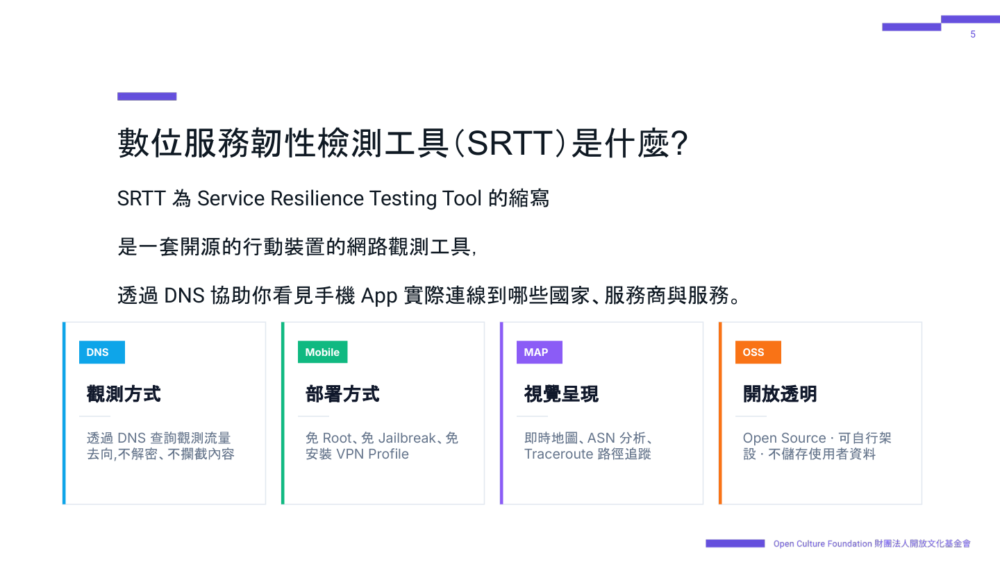
四件事要先講清楚：
它不保存 DNS 歷史、不建立使用者識別、不分析 HTTPS 內容。目的不是監控使用者，而是讓使用者理解「誰正在監控自己」。
同一套工具，用途可以很不一樣：一般人用來理解自己手機的流量、看數位主權與隱私；研究者拿來做 App 行為與 SDK 分析；教室裡可以教 DNS 和網路架構；資安團隊則用來做初步流量觀測、盤點第三方服務、看 App 依賴了哪些雲。這次十一款，走的是研究者那條路。
App 不會直接記住 IP。它會先問 DNS：某個服務在哪？例如 google.com 換成 142.250.77.206，然後才連過去。流程就是：手機 App
→ DNS 查詢 → 取得 IP → 開始連線。
把手機 DNS 指到 SRTT，等於站在「問路」那一步。能看見問了哪個域名、得到哪個 IP、這個 IP 屬於哪家網路（ASN）、標在哪個國家。信件內容它不拆——那是刻意的：不碰加密通道，才不需要 Root、越獄或 VPN。
即時分析看到的不只是 domain，而是它屬於誰、在哪個國家、什麼服務：域名、ASN（例如 AS15169 Google LLC）、國家、IP，有時還能推測來源 App。境外流量比例會算出來；簡報舉的樣本是 73.7% 的 DNS 查詢流向境外。那不自動等於有問題——雲端、CDN 把節點放在海外很常見。簡報寫得很明白：SRTT 是觀測工具，不是判決工具。
ASN（Autonomous System Number）是每家網路服務商的編號。透過它，看到的不是一串 IP 數字，而是流量實際走進哪家營運商：Google（AS15169，搜尋、廣告、分析）、AWS（AS16509，含 CloudFront、S3）、Apple（AS714，iCloud、推播、更新）、Cloudflare（AS13335，CDN、DNS、DDoS 防護）。這次十一款裡，政府 GSN、中華電信 HiNet、LINE 日本原站、蝦皮新加坡，都是對 ASN 對出來的。
路徑也不只「去哪」，還能「怎麼去」。SRTT 用 HTTPS 的 TCP 443 做 traceroute：每一跳的 IP 與 ASN、國家在哪一跳出境、延遲多長。簡報裡的例子很典型——前幾跳還在台灣電信（AS3462，十幾毫秒），下一跳就到美國 Google（一百四十多毫秒）。島內常見個位數到十幾毫秒；一出台灣，數字會跳。國家跳轉發生在哪一跳，海纜議題才有依據。
測完可以一鍵分享觀測快照：當下的查詢、國家、境外比例、主要 ASN，壓進網址或匯出 JSON。伺服器不留底。用來交給隊友、當稽核留證，或隔天把同一份分析打開再看。
簡報寫的流程，這次就是這樣測的：
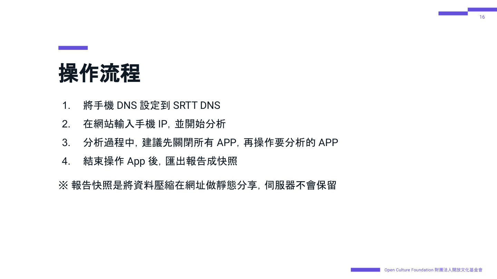
快照把資料壓在網址裡做靜態分享，伺服器不會保留。網站上的實際畫面是這樣：
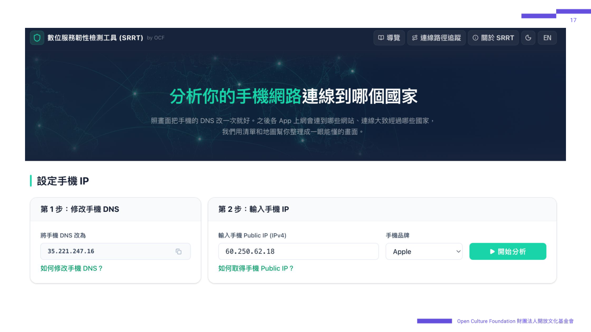
測的時候走完主要功能：啟動、登入、各分頁點一次、觸發核心動作（報案、查病歷、訂票），再閒置一下看背景心跳。這次用的是 iPhone。關掉其他 App，是為了讓列表上的域名盡量只來自眼前這一款。
開始之後，地圖和列表會即時更新：總查詢數、境外比例、不重複網域，以及 Top 網域、國家、服務、ASN。
SRTT 畫面裡的「國家」，多半來自 IP 註冊地。Anycast、CDN 常常會標成美國：Google、Cloudflare、Akamai 的 IP 註冊國經常是 US，但你在台北連過去，封包其實進了台灣節點。地圖上那條線畫去美國，延遲卻只有五到八毫秒——這就是簡報裡 traceroute 要補的那一層。
這次在簡報方法之上，多做一件校正：ping 小於 15 毫秒，視為台灣。 島內機房、台灣邊緣節點通常落在這個範圍；連到日本常見三十多毫秒，美國則要一百多毫秒。數字對不上註冊國時，以延遲為準。所以報告會寫「連線節點在台灣，營運商仍是海外雲」——門在哪，和廚房在哪，要分開。海纜斷了還能不能用，問的是廚房；SRTT 加上 ping，先把門口標對。
SRTT 刻意不拆信件。要知道 App 送出什麼欄位——例如健保是不是把就醫紀錄 POST 到台灣主機——必須另外拆開 HTTPS。這次在 iOS 上用 Stream：在手機裝一張側錄憑證，讓加密連線經過分析工具，才能看到方法、路徑、JSON 欄位類型。這是中間人憑證（MITM）。對研究有用，對金融與通訊 App 來說，也正是它們要防的事。
各 App 反應不一樣。行動郵局偵測到 Stream 憑證，跳出 SSL 異常（ES-0103），封鎖登入與儲匯——這是好的資安設計，金融內容就看不到，只能從連線 IP 判斷還在台灣。台鐵、蝦皮、Google 地圖、ChatGPT、台灣Pay 多數做憑證綁定，連線只剩 CONNECT，報告就只記域名和 IP。
LINE 會阻止中間人憑證。 通訊核心解不開，只能回到 SRTT：看它問了哪些域名、IP 落在日本還是台灣 Akamai。能確定的是路往哪，不是訊息內容。
智生活、健保快易通、警政服務相對能解密，才有「健康存摺 POST 到 GSN」「Clarity 連打 27 次 POST」這種欄位層的結論。看得到內容，才寫內容；看不到，就不寫。主軸仍是 SRTT 的 DNS 觀測，Stream 只補「內容」這一層。
簡報把邊界寫死，數字才不會被用過頭：
這也是為什麼十一款報告能寫「連到哪」，卻不一定能寫「送出哪幾個欄位」。DNS 已經夠判斷政府 GSN、中華電信、LINE 日本、蝦皮新加坡；Stream 能補上的，僅限沒擋住中間人憑證的 App。
簡報最後一句也是這次想做的：不是監控網路，而是讓網路變得可被理解。
工具在 srtt.ocf.tw。簡報：Google 簡報。十一款測完之後怎麼讀，見海纜斷了，你手機裡的 App 還能用嗎？。
給公民社群的入門指引
文／湯家碩
海纜是維持跨境網路通訊的重要基礎設施，但相關資訊分散在海纜所有者、維修業者、電信公司、登陸站與政府機關等不同單位。尤其在發生故障時，故障位置、備援能力與實際容量等資料，可能因商業機密、安全考量或通報制度不同，而僅部分公開或延後發布。國際組織也指出，目前外界對海纜韌性、備援與容量的掌握仍有不足，海纜事故資訊也缺乏一致的共享機制。
民間海纜觀測並非想取代政府或電信業者的資訊發布與說明，而是透過彙整多方資訊並交叉查證，建立國家周邊海纜狀況的補充資訊。即使海纜「全斷」導致斷網的可能性極低，故障時仍可能因備援容量不足，造成網路塞車、延遲升高或服務品質下降。因此，海纜韌性不應以網路是否完全中斷衡量，民間海纜觀測有機會從特定服務或者地區間連線的視點，觀察網路延遲與路徑變化，以透明呈現尚未全面斷網、但可能已妨礙實際使用的韌性衝擊，促進社會對網路韌性的理解與討論。例如「台灣海纜動態地圖」提供了此類民間倡議的一個具體實踐案例。它將連接台灣的海纜路線、登陸點、運作狀態及歷史斷纜事件整理成互動式地圖，並已成為媒體與事實查核機構引用的資訊來源，使海纜狀況與網路韌性議題進入公共討論。這顯示民間可以透過協作，建立容易理解的海纜連線狀況資訊。
國際電信聯盟指出，小島國家及其他對外連線不足地區往往高度依賴少數海纜，因而更容易受到單一故障影響；2022 年東加火山爆發及海嘯造成主要對外海纜多處斷裂，即是明確案例。近年波羅的海與台灣周邊的海纜損壞事件，也引發外界對灰色地帶行動與地緣政治衝突的疑慮。即使個別事故的原因仍須依調查證據判定，這些事件仍凸顯海纜安全不只是技術問題，也關係社會韌性與國家安全；因此，提高資訊透明度並促進公眾持續關注更顯重要。
目前國際上已有 RIPE Atlas 與 Internet Outage Detection and Analysis（IODA）等平台，從全球網際網路的整體運作出發，提供分散式網路量測與大規模中斷偵測。RIPE Atlas 從不同觀測點量測網路延遲與路徑，IODA 則著重偵測國家、地區及網路業者層級的連線異常。其資料可協助辨識網路異常，但若要進一步判斷特定海纜的狀況，仍須結合海纜路線、營運關係與在地資訊，並建立跨區、跨電信業者的觀測合作。基於台灣的實踐經驗，本手冊將彙整民間海纜觀測所需的資料、限制、方法與合作架構，供其他海纜連線較脆弱地區參考。
本手冊旨在協助位於海纜連線較脆弱地區、關心網路韌性但未必具備技術背景的公民社群，了解如何發起民間海纜觀測倡議。在理解觀測限制的前提下，讀者可掌握基本觀測原理與資訊需求，並據此尋找合適的技術夥伴展開合作。
本手冊是入門指引，不涉及下列技術操作細節：海纜故障判定流程、量測系統建置、特定工具操作或精細流量估算方法。
若要建立可用的民間海纜觀測能力，至少需要搜集兩類基礎資訊：
這些資訊會需要由既有的開源情報取得、仰賴第三方服務提供者（公司、社群，或者其他網路觀測倡議）提供的資料，或者自行搜集觀測資料。這些資訊的精確度會直接影響海纜連線狀況觀測的可信賴度。
限制
海纜觀測本質上是一種間接推論：觀測者無法直接取得海纜內部的光訊號、設備警報與實際承載路徑，只能綜合公開通報、網路延遲、封包遺失、路由變化與多方量測，判斷哪些解釋較符合觀察到的現象。因此，觀測結果應說明不同證據如何相互支持、還有哪些其他可能，不宜把單一異常直接等同於特定海纜故障。這種不確定性也形成以下資料與使用者端限制。
觀測海纜連線狀況時，最重要的觀念是：新聞所稱的「某條國際海纜」，例如 EAC1、C2C 或 RNAL，往往是由多個區段、分支與登陸點組成的海纜系統，而不只是一條從甲地直通乙地的線。我們可以把它想成一張「路網」：不同路段如何連接，以及中斷後有哪些替代路徑，就是這個海纜系統的「拓樸」。因此，單一區段故障未必會使整個系統停止傳輸，實際影響還要看有沒有替代路徑、替代路徑是否有足夠容量，以及電信業者如何調度流量。
一個海纜系統的拓樸會形成相對固定的跨國連接路徑。當流量平時經由這些路徑傳輸時，連往特定地區的延遲通常會呈現相對穩定的模式。若某個區段故障，流量可能改走較長或不同的路徑，甚至切換到其他海纜，使沿途路徑與延遲發生變化。持續量測可以提供機構公告以外的異常線索，讓民間有機會間接觀察海纜連線狀況；但這些線索仍不能單獨證明特定海纜發生故障，必須搭配業者公告及其他量測資料交叉判讀。
接下來，本手冊將分別介紹如何透過公開資訊、第三方資料與自行量測，蒐集海纜觀測所需的兩類資料：一是國家周邊海纜的現況資料，用來了解有哪些海纜系統、如何連接及由誰營運；二是海纜故障或異常的即時觀測與推論資料，用來辨識異常發生的時間、影響範圍及可能涉及的路徑。
這一層資料是民間觀測的基礎底圖，目的是確認國家周邊有哪些海纜、如何連接、由哪些單位負責。資料可分為較容易透過公開來源取得的國家連外海纜基本資料，以及用來讀懂拓樸圖、維修工單和觀測結果的海纜系統內部細節資料。
國家連外海纜基本資料
民間海纜觀測的第一步，是交叉比對多方公開資訊，建立國家連外海纜的基本資料，以用來理解政府、業者或第三方發布的海纜故障資訊。值得注意的是，不同來源採用的海纜名稱、統計方式與更新時間可能不同。例如，臺灣數位發展部雖將 FNAL 與 RNAL 列為不同系統，但兩者其實屬於同一套北亞環狀系統的不同部分。
海纜的早期規劃，也可能不同於後來核准營運的配置：PLCN 原始規劃有五個登陸地點，2022 年核准營運時則只連接美國洛杉磯、臺灣頭城與菲律賓 Baler，香港區段已與系統斷開。舊資料中的系統也可能已經停用或退役。
美國聯邦通信委員會（FCC）也曾指出，海纜執照有效期間未必會例行更新所有權與系統變更資料，因此監管機關掌握的資料也可能不完整或過時。因此，建立民間海纜觀測倡議時，應交叉核對不同來源與資料，才能建立可信的國家周邊海纜現況資料。建議搜集的資料欄位如下：
國家連外海纜基本資料：資料可能來源
國家連外海纜基本資料可由政府、業者或產業的公開資訊平台與資料庫取得。
海纜系統內部拓樸資料
完整且最新的海纜系統內部拓樸未必會被公開。但若能取得，這些細節資訊可以用來與維修工單或障礙通報中的海纜區段、設備及光纖代號比對，協助判讀可能受影響的連線範圍。也可與持續累積的延遲與路徑資料交叉比對，推論事故前後的改動情形與可能涉及的海纜區段。不過，這些結果仍屬間接推論，須配合業者公告或其他量測資料確認。
海纜系統內部拓樸資料：資料可能來源
海纜系統的內部拓樸資料通常零散出現在監管文件、業者網站，以及接取、容量、報價或線路設計文件中。不同來源揭露的範圍與精細程度不一：有些可確認區段、分支單元、光纖對與所有權，有些只能看出可提供的端到端路徑、介接地點或延遲。蒐集時應記錄各文件描述的對象與範圍。
閱讀這些來源時，可先區分兩種服務角色。海纜系統所有者或營運者，負責特定海纜這項基礎設施，可把它理解為海底「道路」的所有者或管理者；國際傳輸服務業者，使用自有或租用的海纜容量，搭配陸上骨幹，向電信業者、企業或其他網路提供從一個地點到另一個地點的完整連線，像利用多段道路規劃並提供運送服務的業者。同一家公司可能同時扮演這兩種角色，因此理解資料時應辨識業者在該項服務中的角色。
以下依一般讀者取得資料的難易程度排列。公開程度不一：業者可能公開摘要、範例或依法公開的文件，但完整配置與特定客戶資料通常只提供詢價者、客戶、合作夥伴或主管機關。
一般使用者無法直接看到海纜內部的設備警報或實際流量，但仍可從兩類資料觀察海纜障礙及其影響：一類是長期累積不同量測端點之間的連線資料，用來發現異常；另一類是海纜所有者、營運者、維修單位或政府機關發布的障礙與維修紀錄，用來確認可能涉及的海纜與區段。
雖然家用寬頻網路也能作為觀測點，但使用者通常無法選擇電信業者採用的國際上游及出口路徑，IP 位址、接取位置或實際路由也可能隨時間改變。相較之下，例如 Fast Line 台灣速連這類提供網路連線服務、經營自有 AS（自治系統 Autonomous System，由一個或多個網路營運者管理、採共同對外由政策的一組 IP 網路）的網路服務業者，可以透過邊界閘道協定（Border Gateway Protocol，BGP，不同 AS 之間用來宣布哪些 IP 網路可以到達及交換路徑資訊的協定）與上游或互連網路交換路由資訊；業者可據此設定自身的出口偏好與備援政策。相對於一般網路使用者，這類業者能提供身分與上游關係較明確的觀測來源，也較容易辨識事故前後是否切換出口或上游，使長期累積的延遲與路徑資料更容易解讀。
在進行延遲觀察時，圖形的變化是重要的線索。流量若因路徑中斷而失去回應，或突然切換到較遠的備援路徑，RTT 時間序列圖（RTT time-series chart）可能出現一段無回應，或使延遲基準從一個穩定範圍直接跳到另一個範圍，形成階梯式突變（step change）。相較之下，隨負載逐步累積的一般壅塞，通常不會留下這種整齊的單次階躍，較可能在延遲升高時伴隨抖動、延遲分布擴大或封包遺失增加。不過，這些只是初步特徵，仍須比較多個端點、traceroute 及其他資料。
自行觀測的技術方向與前置條件
建立量測前，應先定義要涵蓋的來源網路與目的地，並記錄各探測器的地點、ASN、接取網路及量測間隔。若觀測點由具有自有 AS、且上游關係已知的業者或合作夥伴提供，會更容易辨識量測從哪個網路送出，以及事故前後是否切換出口或上游。RIPE Atlas 的 Path Analysis 可比較不同時段的 traceroute，標示路由節點、AS／IXP 與 RTT 的變化；這些結果再與業者網路圖、海纜登陸點及社群掌握的傳輸路徑交叉比對，以列出較可能承載該流量的海纜。
可與量測結果交叉比對的障礙與維修資料
延遲與路由量測可以指出異常發生的時間與影響方向，但若要進一步確認可能涉及的海纜或區段，仍須搭配以下事件資料。
延遲與路由量測所需的流量不大，可以先詢問最低頻寬方案；但依臺灣經驗，若自行租用線路、設備及機房接取，最低費用仍可能達每月新臺幣三至四萬元，實際價格也會隨地點與合約條件改變。自行維護還需要能設定路由、管理設備及保存量測資料的技術人員。因此，對多數公民倡議而言，優先與已使用相關服務的公司、學校、資料中心或既有網路營運者合作，由對方提供可分享的延遲與路由資料，通常比自行購買更實際。
民間海纜觀測的價值，不在於以單一數據斷定事故，而在於長期累積可比較的資料，並與公開資訊及多方觀測交叉驗證，這樣的倡議除了長期資料累積，對於提升網路韌性脆弱的社會對國際連線風險的理解與多方利害關係人參與，也會有以下長遠的展望：
本手冊希望提供一個起點，讓關心網路韌性的公民社群，能依自身處境與資源，逐步找到適合在地需求的觀測與參與方式。